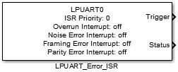
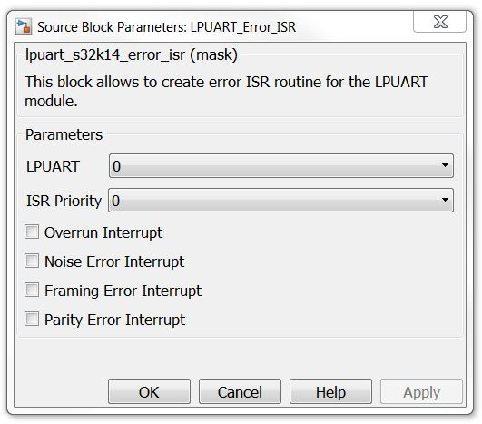

LPUART Error Interrupt Enable/Disable Block
The main functionality of the block is to enable/disable LPUART error interrupts.
Block Image
Inputs:
- None
Outputs:
- Function-Call
- Status Register (LPUARTx_STAT) value (uint32)
Parameters and Dialog Box
LPUART Module
Selects which LPUART module to use.
ISR Level
Interrupt priority level.
Overrun Interrupt
OR is set when software fails to prevent the receive data register from overflowing with data. The OR bit is set immediately after the stop bit has been completely received for the dataword that overflows the buffer and all the other error flags (FE, NF, and PF) are prevented from setting. The data in the shift register is lost, but the data already in the LPUART data registers is not affected. If LBKDE is enabled and a LIN Break is detected, the OR field asserts if LBKDIF is not cleared before the next data character is received.
Noise Error Interrupt
The advanced sampling technique used in the receiver takes three samples in each of the received bits. If any of these samples disagrees with the rest of the samples within any bit time in the frame then noise is detected for that character. NF is set whenever the next character to be read from LPUART_DATA was received with noise detected within the character.
Framing Error Interrupt
FE is set whenever the next character to be read from LPUART_DATA was received with logic 0 detected where a stop bit was expected.
Parity Error Interrupt
PF is set whenever the next character to be read from LPUART_DATA was received when parity is enabled (PE = 1) and the parity bit in the received character does not agree with the expected parity value.
Block Dependency
- Use LPUART_Config Block to configure LPUART
Block Miscellaneous Details:
- None